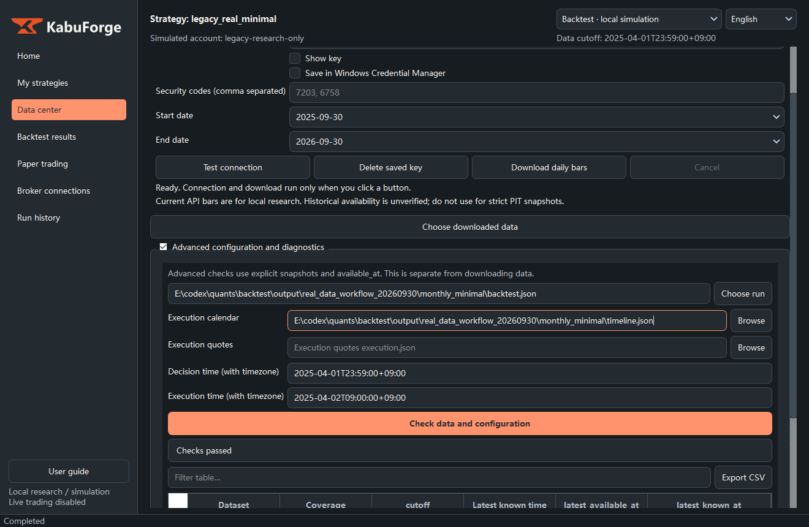
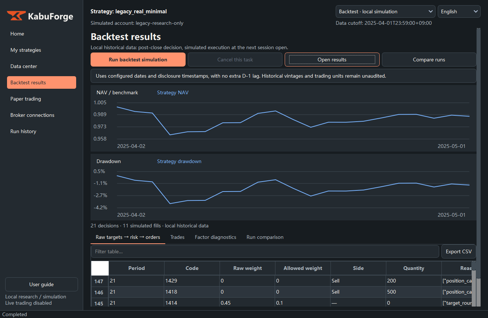
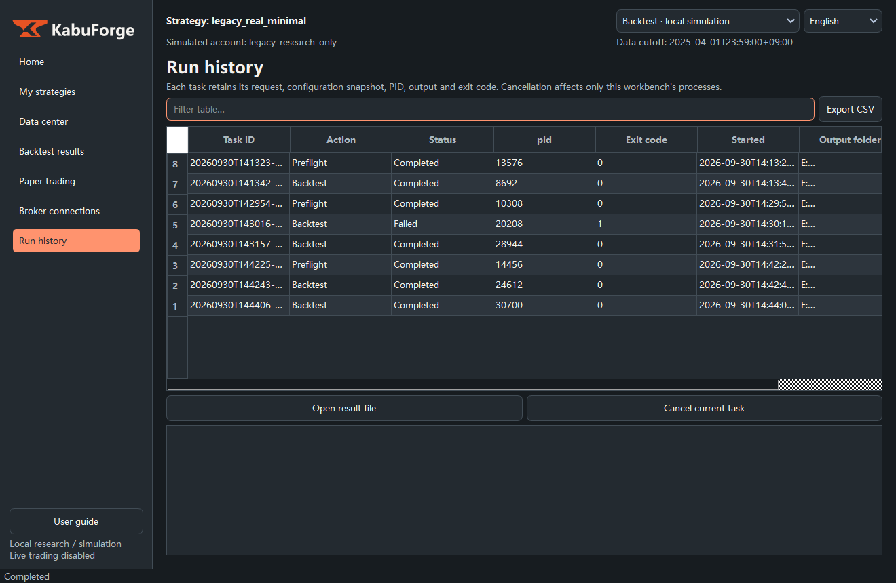

Existing local recording / 本地既有操作演示 / 既存のローカル操作デモ。界面中的历史研究曲线不代表本次公开因子的结果；原始数据、策略配置及账户文件不随演示发布。
Captured from the live application window. GIF summarizes the steps with pauses compressed. 21 NAV points and 11 simulated fills.
中文 / 日本語 / English · 操作说明 / 操作マニュアル / User guide


